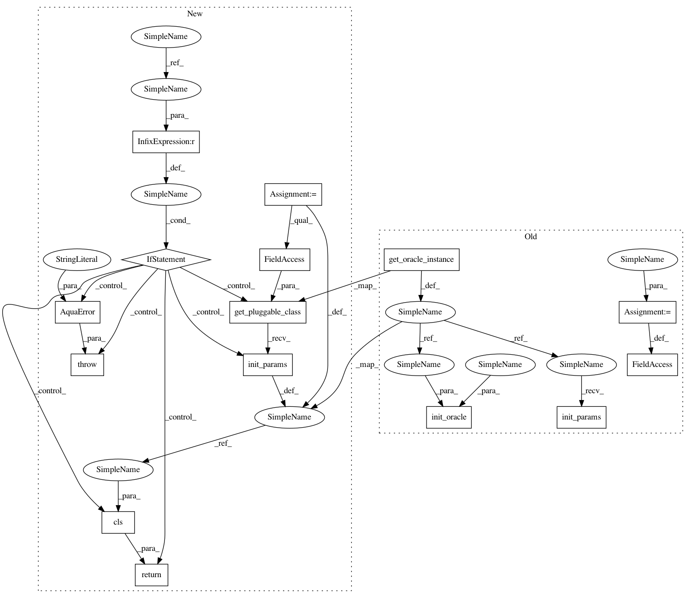

ccc1e921ae6de4890e759f2a3a0d13b996c340a8,qiskit_aqua/algorithms/single_sample/dj/deutsch_jozsa.py,DeutschJozsa,init_params,#DeutschJozsa#Any#Any#,59
Before Change
def init_params(self, params, algo_input):
dj_params = params.get(QuantumAlgorithm.SECTION_KEY_ALGORITHM)
self._input = algo_input
oracle_params = params.get(QuantumAlgorithm.SECTION_KEY_ORACLE)
oracle = get_oracle_instance(oracle_params["name"])
oracle.init_params(oracle_params)
self.init_oracle(oracle, algo_input)
def init_oracle(self, oracle, algo_input):
oracle.check_input(algo_input)
oracle.construct_circuit(algo_input)
After Change
@classmethod
def init_params(cls, params, algo_input):
if algo_input is not None:
raise AquaError("Unexpected Input instance.")
dj_params = params.get(QuantumAlgorithm.SECTION_KEY_ALGORITHM)
oracle_params = params.get(QuantumAlgorithm.SECTION_KEY_ORACLE)
oracle = get_pluggable_class(PluggableType.ORACLE,
oracle_params["name"]).init_params(oracle_params)
return cls(oracle)
def _construct_circuit_components(self):
// preoracle circuit
qc_preoracle = QuantumCircuit(
In pattern: SUPERPATTERN
Frequency: 3
Non-data size: 15
Instances
Project Name: Qiskit/qiskit-aqua
Commit Name: ccc1e921ae6de4890e759f2a3a0d13b996c340a8
Time: 2019-01-07
Author: annaphan@au.ibm.com
File Name: qiskit_aqua/algorithms/single_sample/dj/deutsch_jozsa.py
Class Name: DeutschJozsa
Method Name: init_params
Project Name: Qiskit/qiskit-aqua
Commit Name: cd8839a6e9ca1a36bef12d11460f68de3c02c45b
Time: 2019-01-07
Author: annaphan@au.ibm.com
File Name: qiskit_aqua/algorithms/single_sample/simon/simon.py
Class Name: Simon
Method Name: init_params
Project Name: Qiskit/qiskit-aqua
Commit Name: ccc1e921ae6de4890e759f2a3a0d13b996c340a8
Time: 2019-01-07
Author: annaphan@au.ibm.com
File Name: qiskit_aqua/algorithms/single_sample/bv/bernstein_vazirani.py
Class Name: BernsteinVazirani
Method Name: init_params